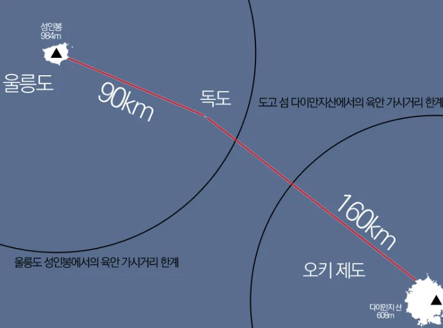

독도가 간접 언급된 첫 문헌으로 추정되는 것은 한국 측의 삼국사기(1145년)로 지증왕 13년에 있었던 이사부의 우산국(于山國) 정벌을 다룬 내용이 독도가 편입된 첫 시기로 추정된다.
일본의 가와카미 겐조(川上健三)는 세종실록이 고려사를 재구성하는 과정에서 울릉도의 다른 이름에 지나지 않는 우산도를 착오로 집어넣었다고 주장했으나, 애초에 고려사와 세종실록은 김종서로 편찬 책임자부터가 동일인이다. 울릉도에 파견되어 주민의 쇄출을 집행한 김인우의 직함 또한 1차 쇄출(1416년)에서는 '무릉등처안무사'였다가, 3차 쇄출(1423년)에서는 '우산·무릉등처안무사'로 바뀐다. 따라서 당시 조선이 울릉도, 독도라는 두 섬을 따로 인식했음은 분명하다.
